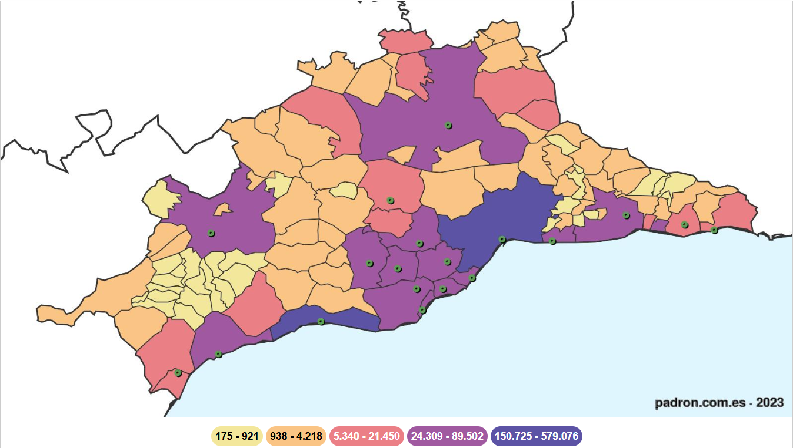
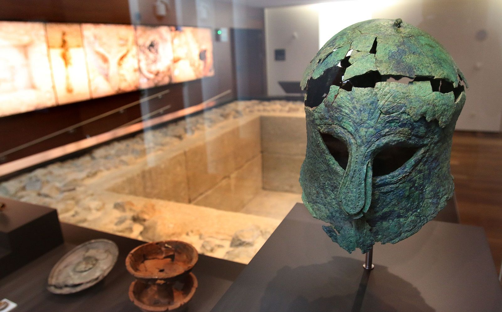
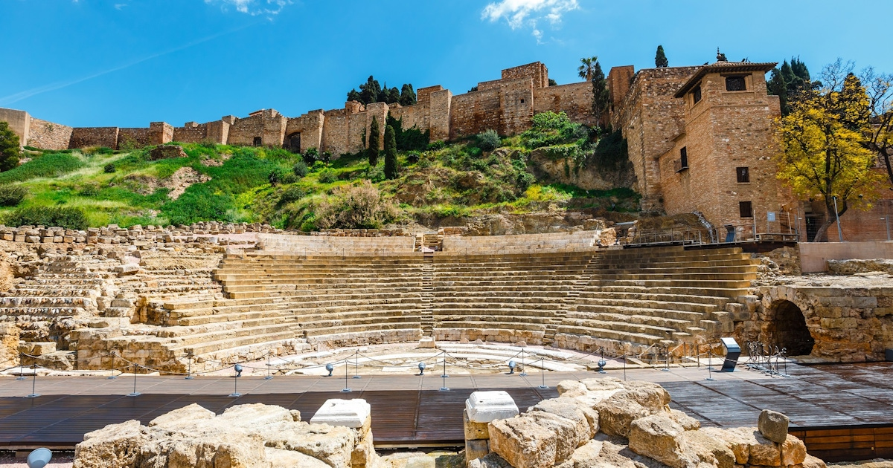
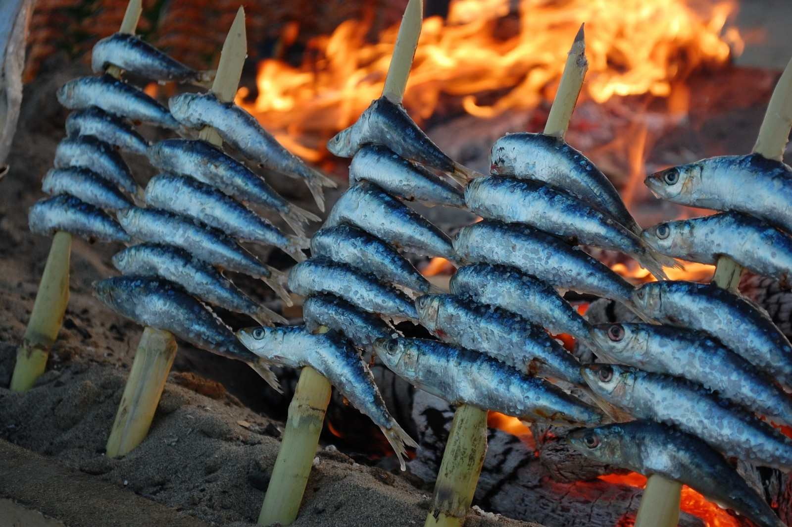
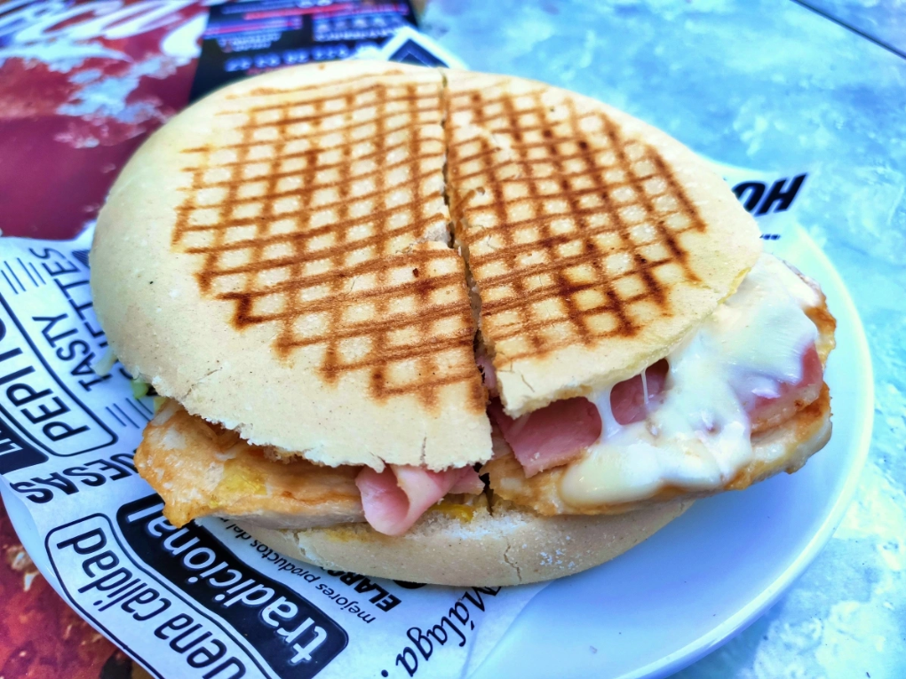
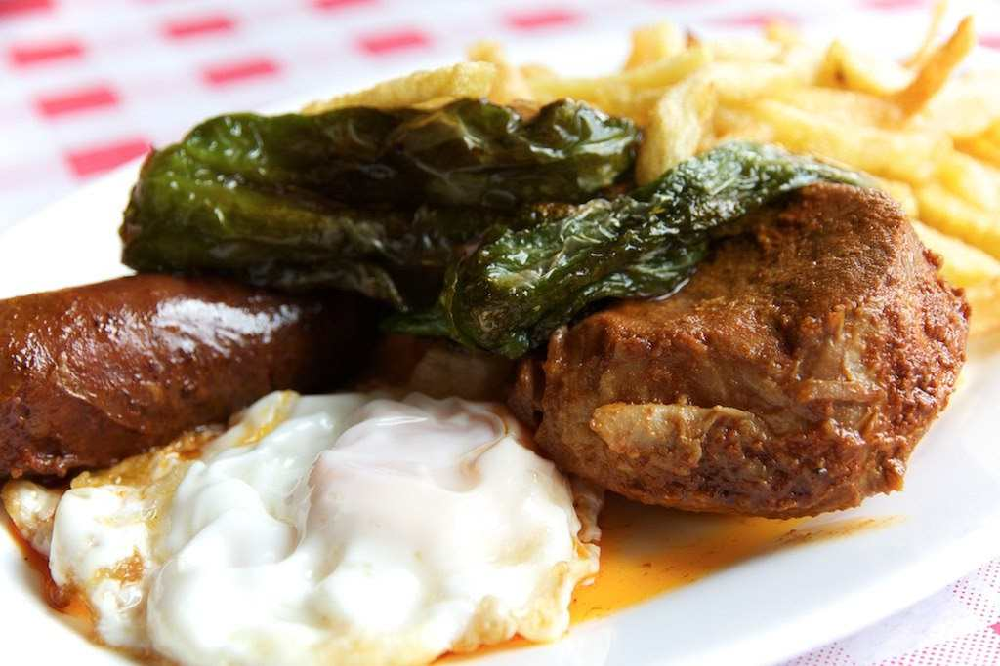
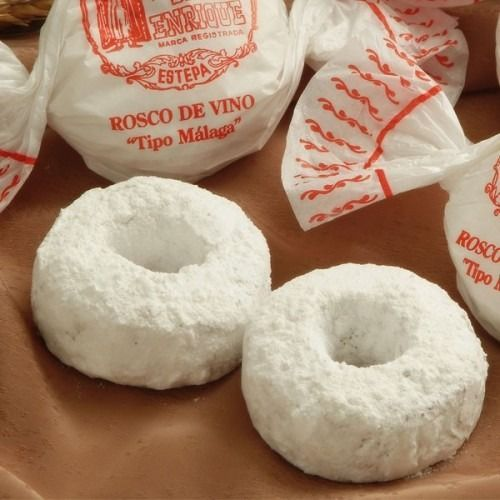
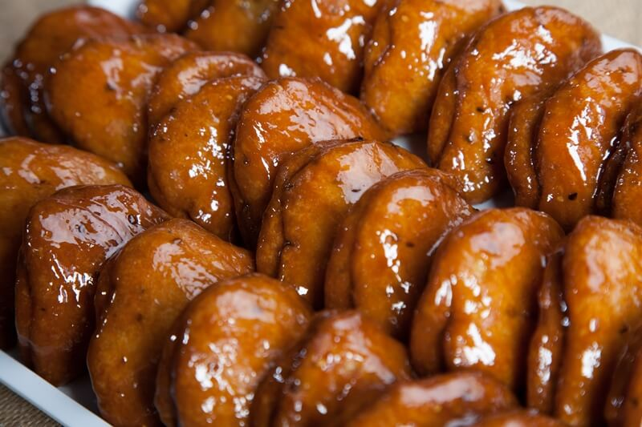
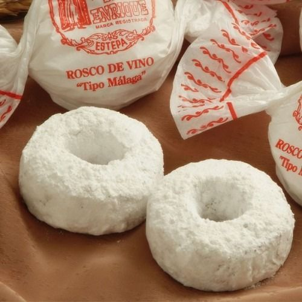
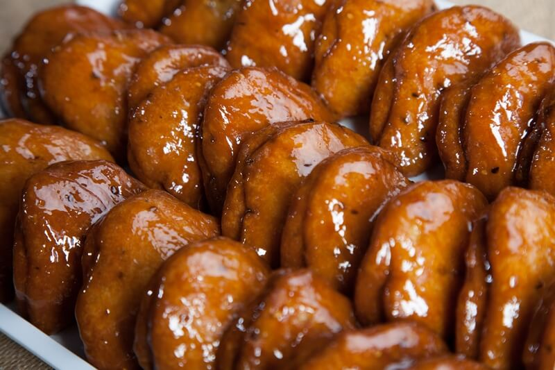

Málaga es una ciudad costera situada en el sur de España, en plena Costa del Sol. Con un clima mediterráneo privilegiado, más de 300 días de sol al año y un ambiente vibrante, combina historia, cultura y mar en un mismo espacio. Es una ciudad donde conviven tradición y modernidad: museos de prestigio, una gastronomía destacada y un puerto renovado.

POBLACIÓN
Más de 580.000 habitantes, siendo la segunda ciudad más poblada de Andalucía y un importante centro económico y turístico del sur de España.

AÑO DE FUNDACIÓN
Fundada por los fenicios alrededor del siglo VIII a. C., Málaga es una de las ciudades con continuidad histórica más larga de Europa.

LUGARES DESTACADOS
Su historia milenaria se concentra en la Alcazaba, el Teatro Romano y el Castillo de Gibralfaro. El Centro Histórico y Muelle Uno son sus pulsos modernos.
LUGARES IMPRESCINDIBLES

Vista de la Alcazaba, la Catedral y la iglesia de San Agustín
La panorámica clásica de Málaga: combina la arquitectura histórica de la **Alcazaba** y la silueta de la **Catedral** (La Manquita), mostrando el corazón monumental de la ciudad.

Teatro Romano y Alcazaba
Símbolo de la convivencia de culturas: el **Teatro Romano** (siglo I a.C.) y la fortaleza árabe de la **Alcazaba** se encuentran superpuestos, ofreciendo un viaje único a través de 20 siglos de historia.
Muelle Uno y Palmeral
El paseo marítimo más moderno de Málaga, ideal para ocio, compras y gastronomía. Conecta la ciudad con el mar a través del **Palmeral de las Sorpresas** y ofrece vistas inmejorables de la bahía al atardecer.

Gastillo de Gibralfaro
Antigua fortaleza fenicia convertida en castillo nazarí. Su principal atractivo es la **vista panorámica 360º** que ofrece de la ciudad, el puerto y la Costa del Sol.
PLATOS TÍPICOS
Málaga también se come...

Espetos de Sardinas
La esencia de la cocina malagueña: sardinas ensartadas en cañas y asadas al fuego de leña en la arena. Un plato sencillo y obligatorio junto al mar. Se consumen mejor en los meses sin 'R'.
Ensalada Malagueña
Un plato refrescante y completo, ideal para el verano. Lleva patatas cocidas, bacalao desmigado, naranjas, aceitunas aloreñas, y huevo duro, aderezado con aceite de oliva.

Campero Malagueño
Un bocadillo caliente y circular, muy popular en Málaga. Se rellena típicamente de jamón, queso, pollo, lechuga y mayonesa, siempre servido con su inconfundible pan tostado.

Plato de los Montes
Un plato de montaña contundente, perfecto para combatir el frío. Combina lomo en manteca, chorizo, morcilla, patatas fritas, huevo y pimientos. Ideal para compartir.
...y es muy dulce

Roscos de Vino
Dulce tradicional de la Navidad en Málaga, elaborado con harina, vino dulce, sésamo, canela y manteca de cerdo, con un acabado de azúcar glas. Se deshacen en la boca.
Tortas Locas
El dulce de pastelería más icónico de la ciudad. Son dos capas de hojaldre rellenas de crema pastelera y cubiertas con un glaseado de huevo y naranja. Muy fácil de encontrar.

Borrachuelos de Miel
Dulce de sartén frito, aromatizado con anís, cáscara de naranja y especias. Su nombre viene de mojarlos en vino blanco antes de rebozarlos en miel o azúcar.
Bienmesabe
Postre de origen conventual, a base de almíbar, huevo y almendras molidas, a menudo con un toque de canela. Es típico de la provincia, especialmente en Antequera, y muy dulce.

Roscos de Vino
Dulce tradicional de la Navidad en Málaga, elaborado con harina, vino dulce, sésamo, canela y manteca de cerdo, con un acabado de azúcar glas. Se deshacen en la boca.
Tortas Locas
El dulce de pastelería más icónico de la ciudad. Son dos capas de hojaldre rellenas de crema pastelera y cubiertas con un glaseado de huevo y naranja. Muy fácil de encontrar.

Borrachuelos de Miel
Dulce de sartén frito, aromatizado con anís, cáscara de naranja y especias. Su nombre viene de mojarlos en vino blanco antes de rebozarlos en miel o azúcar.
Bienmesabe
Postre de origen conventual, a base de almíbar, huevo y almendras molidas, a menudo con un toque de canela. Es típico de la provincia, especialmente en Antequera, y muy dulce.
| Destino | Autobús (EMT) | Coche / Parking | Tren / Metro | Caminando |
|---|---|---|---|---|
| Centro Histórico / Teatro Romano | Líneas hacia Alameda Principal o Paseo del Parque. | Difícil acceso. Usar Parking Plaza de la Marina o Alcazaba. | Cercanías C1 (Centro-Alameda) o Metro (Atarazanas). | Zona mayormente peatonal (Calle Larios). |
| Muelle 1 (Puerto) | Paradas en Paseo del Parque (casi todas las líneas). | Parking subterráneo propio "Muelle Uno". | 15 min a pie desde estación Centro-Alameda. | Acceso directo desde el Palmeral de las Sorpresas. |
| Castillo de Gibralfaro | Línea 35 (Sube directamente hasta la puerta). | Pequeño parking en la cima (se llena rápido). | No hay acceso directo (demasiada pendiente). | Subida empinada por sendero La Coracha (20-30 min). |
Horarios y Afluencia
Comprobando aforo...
Atención: Sin visitas turísticas durante misas.
Recomendación: Ir temprano
Actualizando colas...
Taquilla cierra 45min antes.
Ocupación mediodía
Actualizando...
Zona abierta 24h.
Mejor momento
Revisando tráfico...
Subida a pie muy dura.
Preferencia acceso
Preguntas Frecuentes
¿Cuándo son gratuitos los museos?
AhorroLa mayoría de museos (Picasso, Pompidou, Thyssen) tienen entrada gratuita los domingos durante las últimas 2 horas de apertura.
¿Es potable el agua del grifo?
SaludSí, el agua de Málaga es totalmente potable y segura, aunque tiene un sabor fuerte debido a la alta concentración de cal (agua dura).
¿Se deja propina en los bares?
CulturaNo es obligatorio. Sin embargo, es costumbre dejar el "suelto" o redondear la cuenta si el servicio ha sido bueno (aprox. 5-10%).
¿Dónde comprar la tarjeta de bus?
TransporteEn estancos y kioscos de prensa. La tarjeta "Transbordo" permite cambiar de línea gratis durante una hora.